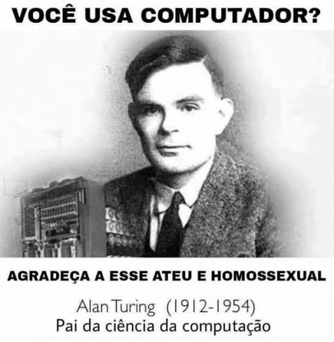
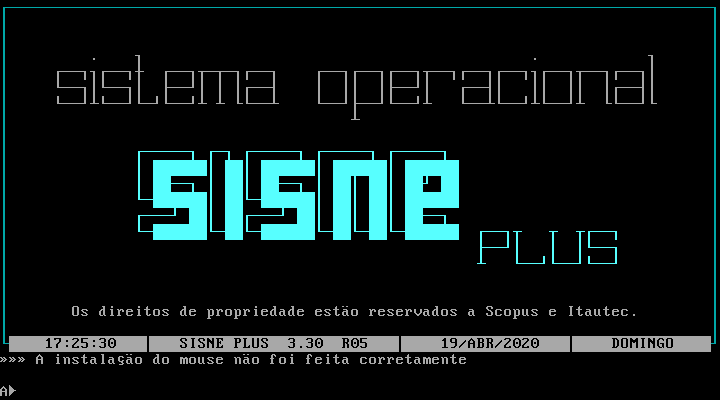

Primeiros Computadores &
Início da Ciência da Computação
Um tratado histórico e conceitual aprofundado: do cálculo manual e das calculadoras de engrenagens do século XVII à formalização universal de Alan Turing, a revolução da arquitetura com programa armazenado e o pioneirismo tecnológico brasileiro.


Operação física realista: conta superior vale 5 (desce até a trave); contas inferiores valem 1 (sobem juntas até a trave). Dígito individual exibido abaixo de cada haste:

Gire a manivela para acionar o trem diferencial de 30 engrenagens de bronze e sincronizar o Sol, as Fases da Lua, o Ciclo Metônico e os Eclipses de Saros:

Clique nos discos para girar cada ordem decimal ou teste a cascata lenta de vai-um:

Charles Babbage
1791 - 1871 • Londres, Inglaterra

O Pai da Arquitetura de Computadores: Babbage separou fisicamente a computação entre o processador (The Mill / O Moinho) e a memória de dados (The Store / O Armazém). Projetou engrenagens de latão com capacidade para 1.000 variáveis de 50 dígitos decimais e adotou cartões perfurados de Jacquard em cadeia para controle sequencial e saltos condicionais mecânicos.
Ada Lovelace
1815 - 1852 • Londres, Inglaterra

Considerada a Primeira Programadora da História: Lovelace compreendeu a universalidade da Máquina Analítica e publicou em 1843 a célebre Nota G contendo o primeiro programa completo publicado da história (o cálculo dos Números de Bernoulli com laços e desvios). Embora Babbage já houvesse esboçado algoritmos em cadernos particulares, foi Ada quem detalhou publicamente o fluxo formal de execução e antecipou que a máquina agiria sobre qualquer símbolo abstrato: "A máquina analítica tece padrões algébricos exatamente como o tear de Jacquard tece flores e folhas".


O primeiro projeto de computador universal: o Cartão comanda as agulhas, o giro da Manivela aciona as engrenagens do Moinho (ALU) e o Armazém (Memória) grava o resultado nos cilindros de latão.
Demonstração Histórica: O Moinho da Máquina Analítica de Babbage
Conheça o modelo experimental do Moinho construído por Charles Babbage e preservado no Museu de Ciências de Londres, demonstrando o mecanismo pioneiro de cálculo automático e cartões de Jacquard concebido na década de 1830.
Assistir no YouTube (Science Museum) ↗




Soma Binária: a máquina varre a fita até o dígito menos significativo e propaga a soma com vai-um para a esquerda:

• Os Relés Telefônicos: Chaves elétricas magnéticas com estalo mecânico. Quando há furo na fita, a agulha fecha o circuito e energiza a bobina, fechando o contato (bit 1). Sem furo, fica aberto (bit 0).
• Aritmética Binária Pura: O Z3 foi o primeiro computador funcional a usar o sistema binário com ponto flutuante de 22 bits, sem engrenagens decimais.


Varredura óptica de fita telegráfica Baudot a 5.000 caracteres/segundo. Válvulas tiratron calculam a correlação estatística booleana (método Turing-Welchman) para encontrar as posições dos pinos Lorenz:

Cinejornal Histórico de 1946: A Apresentação Pública do ENIAC
Registro de 15 de fevereiro de 1946: lâmpadas neon em contagem decádica, disparo de cartões perfurados IBM e as programadoras cabeando os painéis.
Assistir no YouTube (Universal Newsreel) ↗• Unidade de Controle (UC): busca as instruções sequencialmente na memória e comanda a máquina;
• Unidade Lógica e Aritmética (ALU): executa operações aritméticas e comparações binárias;
• Registradores Internos: retenção ultrarrápida para operandos e ponteiros;
• Memória Principal Unificada: armazena indistintamente rotinas de software e números;
• Canais de Entrada e Saída: comunicação com o mundo externo.


Documentário Universitário: O Renascimento do Manchester Baby
Produzido pela Universidade de Manchester e pelo Museu de Ciência e Indústria (MOSI), detalhando como Tom Kilburn e Freddie Williams fizeram o primeiro programa armazenado rodar em 21 de junho de 1948.
Assistir no YouTube (Univ. of Manchester) ↗


Editar codigo
Aguardando execucao...


Como o Brasil nunca possuiu fundições comerciais de semicondutores (wafer fabs) para manufatura de chips de silício, era impossível fabricar nacionalmente o coração dos computadores. Todos os processadores centrais (Zilog Z80, Intel 8088, Motorola 68000), memórias DRAM e controladores lógicos eram compulsoriamente importados dos Estados Unidos e da Ásia — muitas vezes através de cotas burocráticas rígidas da SEI (Secretaria Especial de Informática) ou pelo contrabando massivo via Paraguai e descaminho.
A Gênese do Modelo White Label no Brasil: O que as fabricantes nacionais de fato faziam era a engenharia reversa das memórias ROM/BIOS (copiando códigos proprietários de Apple, Sinclair, Tandy e IBM, o que quase gerou retaliações comerciais dos EUA no governo Reagan), o desenho de placas de circuito impresso (PCBs), a montagem de fontes, teclados e a injeção plástica dos gabinetes. Na essência, estabeleceu-se ali a matriz produtiva que fabricantes brasileiras reproduzem até hoje (como Positivo, Multilaser/Multi, Pichau e CCE): importar componentes e plataformas semiprontas da Ásia (regimes CKD/SKD), montar localmente na Zona Franca de Manaus sob as regras do Processo Produtivo Básico (PPB) para obter isenções fiscais da Lei de Informática e estampar a marca nacional na carcaça.
O Custo da Reserva: O consumidor e as empresas brasileiras pagavam entre 2 e 4 vezes mais caro por máquinas com 3 a 5 anos de defasagem tecnológica em relação aos lançamentos mundiais. Entre as maiores fabricantes e montadoras dessa fase estavam:
• Prológica: líder dos clones corporativos com o CP500 (clone do TRS-80) e a linha Solution 16 / SP 16 (clones de IBM PC/XT);
• Scopus: criadora do clone Nexus 1600 e pioneira nos terminais de automação bancária;
• Microdigital: campeã do mercado doméstico com clones britânicos da Sinclair, como o TK85 (ZX81) e o TK90X (ZX Spectrum);
• Unitron: célebre pela clonagem não autorizada do Apple II (ApII) e pela tentativa de clonar o Macintosh (Unitron Mac 512), barrada após pressão internacional.



Experimente o ambiente autêntico de programação dos anos 80: monitor de tubo CRT com fósforo persistente e interpretador BASIC executando comandos de 8 bits:
PRINT 1972 + 50
PRINT 2 ^ 10
PRINT (45 * 12) / 3
PRINT "POLI-USP 1972"
PRINT "PROLOGICA CP-500"
PRINT "RESERVA MERCADO"
O SISNE Plus foi o sistema operacional desenvolvido no Brasil pela Scopus Tecnologia em cooperação com a Itautec durante a vigência da Reserva de Mercado. Compatível 100% com o MS-DOS 3.30 da Microsoft ao nível de interrupções da CPU (INT 21h), ele equipava os computadores compatíveis com o IBM PC/XT (como a linha Scopus Nexus 1600 e Itautec I-7000), sustentando a pioneira automação bancária nacional.